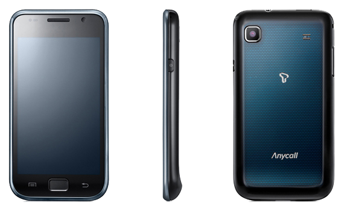

삼성 갤럭시 S (SHW-M110S)
1. 외관

삼성전자가 2010년 3월, CTIA 2010에서 공개한 안드로이드 스마트폰.
2. 사양
| 프로세서 | 삼성 엑시노스 3110 SoC. ARM Cortex-A8 1 GHz CPU, PowerVR SGX540 200 MHz GPU | ||
| 메모리 | 512 MB RAM, 512 MB OneNAND, 8 / 16 GB eMMC 4.3 moviNAND 내장 메모리, micro SDHC (최대 32 GB 지원) | ||
| 디스플레이 |
4.0인치 WVGA(480 x 800) RG-BG 펜타일 서브픽셀 방식의 SMD Super AMOLED 멀티터치 지원 정전식 터치 스크린 |
||
| 네트워크 | 기본 | HSDPA & HSUPA & UMTS |
GSM & EDGE Wi-Fi 802.11b/g/n, 블루투스 3.0 |
| CM | TD-SCDMA | ||
| 카메라 | 전면 30만 화소, 후면 500만 화소 AF | ||
| 배터리 | Li-Ion 1500 mAh | ||
| 운영체제 | 안드로이드 2.1 (Eclair) → 2.2 (Froyo) → 2.3 (Gingerbread) | ||
| 규격 | 64.2 x 122.4 x 9.9 mm | ||
3. 상세
대한민국에서는 2010년 6월에 SK텔레콤 전용으로 출시되었고, 타사에는 갤럭시 K와 갤럭시 U라는 아류작이 있다.
자매품은 갤럭시 S 호핀이며 후속작으로 갤럭시 S II가 있다.